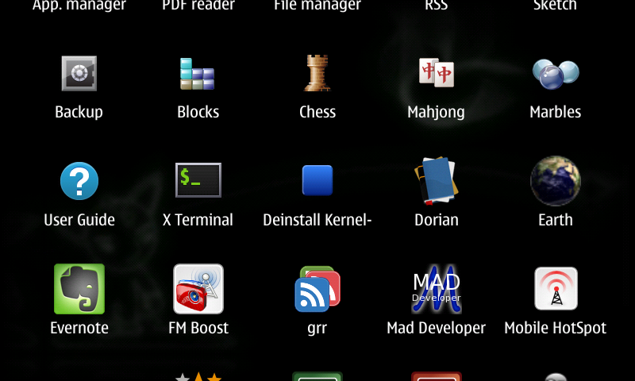
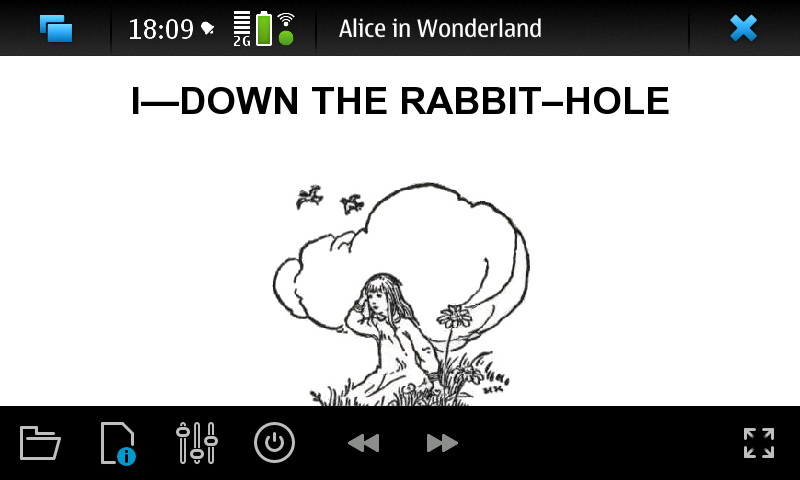
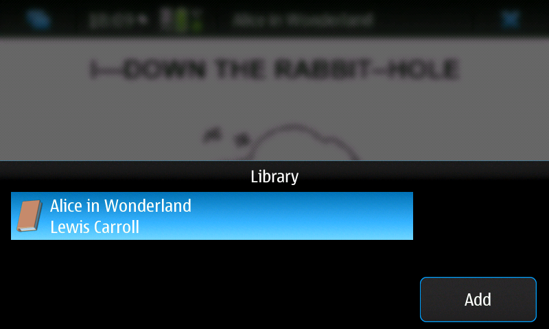
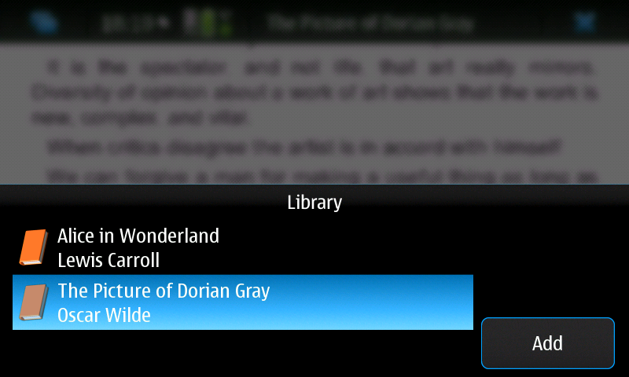
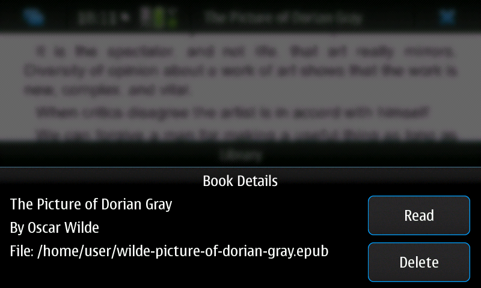
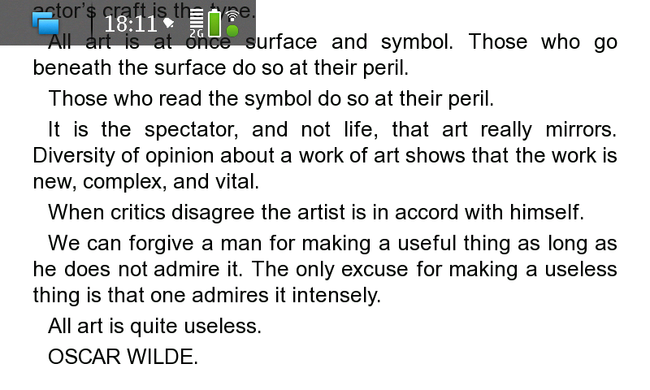

Dorian is an e-book reader for EPUB format books. Supports book reading, organizing books into library, bookmarks, color and font styles, portait and landscape modes.
The application can be downloaded using the N900's Application Manager, after activating the Maemo extras-devel repository.
The project is maintained in the Maemo Garage.Some random screenshots:

Icon in the application menu

Reading a book

Library view

Library with new book added

Book details

Reading in full screen mode